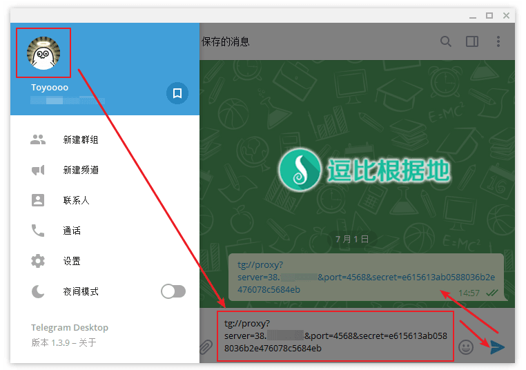
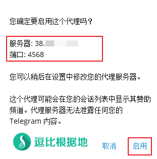
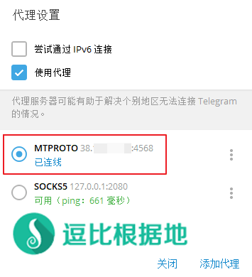
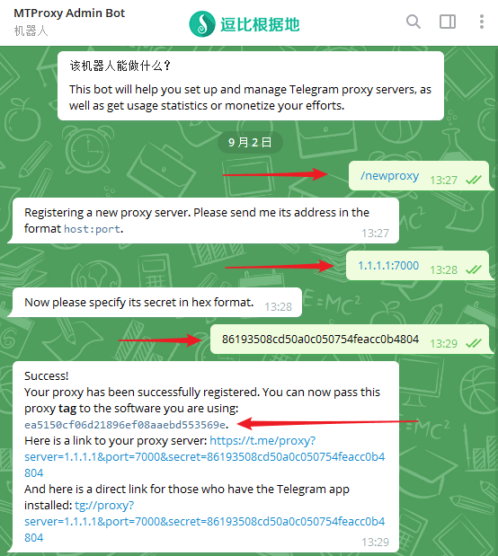
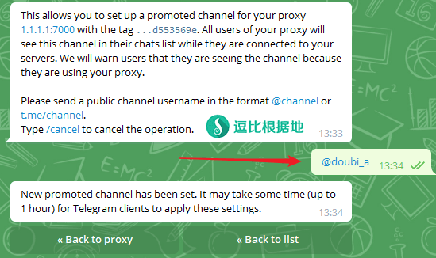

最近有人给我推荐了个代理软件，查了下发现是专门为 Telegram 开发的代理软件，代理服务端限制了客户端只允许访问 Telegram 的服务器。
相比于使用其他代理软件，然后 Telegram 配置链接本地代理软件而言，该方法更方便一些，无需每次启动 Telegram 都需要先启动代理软件，特别是对于手机使用者来说。
至于该软件的特性，大概就是占用资源少、使用方便、Telegram官方支持(是不是官方开发的我也不知道，估计不是)。
而且，今年4月俄罗斯封禁了 Telegram，5月底 MTProxy 第一个版本就出来了，考虑到开发时间，怕是因为俄罗斯封禁的原因而促使 Telegram 要搞个 Telegram 专用的代理工具了。
注意：MTProxy 仅支持 Telegram 客户端使用，无法用于代理其他网站和软件！
逗比根据地 交流群组：https://t.me/doubi
逗比根据地 公告频道：https://t.me/doubi_a
Telegram 使用教程：https://doub.io/telegram-jc1/
Github 项目地址：https://github.com/TelegramMessenger/MTProxy
官方项目为 C 语言编写，另一个 Go 语言编写的：『原创』MTProxy Go版 一键脚本
为什么要用 MTProxy ？为何不直接用代理软件？
可能有人会疑问：MTProxy 是一个只能 Telegram 客户端使用的代理，那么为什么不直接用其他代理软件呢？
我就特地来回答一下大家的疑问。
1. 移动设备便捷性：对于电脑用户来说， MTProxy 相对鸡肋，因为很多人都是代理软件开机启动并且全天不关。但是对于手机用户来说，每次要查看 Telegram 客户端，都需要先开启代理软件，而如果你在手机上不是经常要挂代理，但是你会经常去 Telegram 里吹比打屁，那么你就很适合使用 MTProxy 了，它可以让你使用 Telegram 客户端像使用国内的 QQ、微信一样方便，打开即用。
2. 适合分享给朋友：当你觉得 TG很好用，想要劝身边的朋友抛弃 QQ、微信 转投 Telegram 时，你却发现你还需要给他配置一套代理软件、代理账号，指导他如何使用代理软件，巴拉巴拉的。但是如果你有 MTProxy 代理账号，那么只需要填写代理配置后，即可直接使用！
系统要求
CentOS 7 / Debian 7+ / Ubuntu 14.04 +
推荐 Debian 7/8 x64，这个是我一直使用的系统，我的脚本在这个系统上面出错率最低。
注意：因为 CentOS 6 系统的 GCC 版本过低，会导致编译失败（报错这个），请使用更高版本的系统！
脚本版本
Ver: 1.0.8
安装步骤
执行下面的代码下载并运行脚本。
wget -N --no-check-certificate https://raw.githubusercontent.com/ToyoDAdoubiBackup/doubi/master/mtproxy.sh && chmod +x mtproxy.sh && bash mtproxy.sh
运行脚本后会出现脚本操作菜单，选择并输入 1 就会开始安装。
点击展开 查看更多
请输入 MTProxy 端口 [1-65535]
(默认: 443):
========================
端口 : 443
========================
请输入 MTProxy 密匙（手动输入必须为32位，[0-9][a-z][A-Z]，建议随机生成）
(默认：随机生成):
========================
密码 : xxxxx
========================
请输入 MTProxy 的 TAG标签（TAG标签只有在通过官方机器人 @MTProxybot 分享代理账号后才会获得，不清楚请留空回车）
如果本机是NAT服务器（谷歌云、微软云、阿里云等），则请输入你的服务器内网IP，否则会导致无法使用。如果不是请直接回车！
(默认：回车跳过):
[信息] MTProxy 停止成功 !
[信息] MTProxy 启动中...
[信息] MTProxy 启动成功 !
————————————————
Mtproto Proxy 信息 :
地址 : x.x.x.x
端口 : 443
密码 : xxxxx
链接 : tg://proxy?server=xxxxxx...
链接 : https://t.me/proxy?server=xxxxxx...
————————————————
使用说明
进入下载脚本的目录并运行脚本：
./mtproxy.sh
然后选择你要执行的选项即可。
MTProxy 一键管理脚本 [vX.X.X]
---- Toyo | doub.io/shell-jc7 ----
0. 升级脚本
————————————
1. 安装 MTProxy
2. 更新 MTProxy
3. 卸载 MTProxy
————————————
4. 启动 MTProxy
5. 停止 MTProxy
6. 重启 MTProxy
————————————
7. 设置 账号配置
8. 查看 账号信息
9. 查看 日志信息
10. 查看 链接信息
————————————
当前状态: 已安装 并 已启动
请输入数字 [0-10]:
其他操作
启动：/etc/init.d/mtproxy start
停止：/etc/init.d/mtproxy stop
重启：/etc/init.d/mtproxy restart
查看状态：/etc/init.d/mtproxy status
安装目录：/usr/local/mtproxy
配置文件：/usr/local/mtproxy/mtproxy.conf
日志文件：/usr/local/mtproxy/mtproxy.log
Telegram 使用方法说明：
如果你的 TG 客户端没有 Mtproto 代理选项，那么请更新到最新版本！
Telegram 内置了 Mtproto 代理选项，所以TG客户端内点击 tg://proxy?xxxx... 链接就会自动配置代理，非常方便。
PC 使用步骤
点击展开 查看更多
点击 Telegram 客户端左上角的 三横杠 按钮，
然后点击 你的头像 就会进入保存消息聊天窗口中（在这里发只会被自己看到，而且正好保存起来），
接着复制 tg://proxy?xxxx... 并发送，
最后点击 tg://proxy?xxxx... 链接后就会提示你是否要启用这个代理，点击 启用 按钮，
就会发现自动添加并使用该代理配置了。
或者你可以浏览器访问 https://t.me/proxy?server=xxxxxx... 链接，然后浏览器会自动调用 Telegram 客户端。
至于手动添加，只需要去代理设置处，添加新代理并选择 Mtproto 代理选项，根据账号信息分别填写服务器IP、端口、密码即可。




分享代理账号并推广频道
MTProxy 有个官方机器人，可以让你在此分享 MTProxy 代理账号，但是只分享没收获的话，大家都没什么动力，所以 MTProxy 机器人可以让你分享出去的免费账号起到推广频道的作用，使用你机器人处分享的免费账号的人都会在聊天列表里看到推广频道信息。
机器人：https://t.me/MTProxybot 或 @MTProxybot
点击展开 查看更多
添加代理账号
使用机器人时，你需要先搭建好 MTProxy 代理，然后如下图所示在机器人处添加你的代理账号：
- /newproxy - 添加一个新的代理。
- 1.1.1.1:7000 - 机器人让你告诉它你的代理IP和端口
- 86193508cd50a0c050754feacc0b4804 - 机器人让你告诉它你的代理密匙
（如果你密匙前面含有 dd 字符，则手动去掉，分享给他人时可以加上）
注意：此处的代理信息请填写自己的代理信息，不要跟着教程一模一样的添加。。。
然后机器人会告诉你一个唯一的TAG标签，如下图的：ea5150cf06d21896ef08aaebd553569e
这时候你去运行脚本 - 7.设置 账号配置 - 3.修改 TAG 配置 - 填写TAG标签，然后脚本会自动重启代理服务端。
这时候我们仅仅是添加了个代理账号，还没有配置推广频道。接下来告诉你如何配置。

配置推广频道
机器人会列出你添加的代理账号，点击你要配置的账号信息。

接着文字就会变成如下图所示：
- Set promotion - 配置推广频道
- Stats - 查看已分享代理账号的统计信息
- Delete proxy - 取消分享当前代理（如果你已经分享给别人了，那么你还需要修改下端口或密匙才行）
- Back to list - 返回已分享代理列表
我们点击 Set promotion 选项。
然后机器人就会让你说出要推广的频道链接，可以是 t.me/xxx 格式，也可以是 @xxx 格式。
例如我频道链接为 doubi_a ，那么我可以告诉机器人 t.me/doubi_a 或 @doubi_a 。
注意：如果你不打算配置推广频道了，请输入 /cancel 取消该操作。
发出后，机器人就会告诉你需要一段时间生效，到时候其他人使用你这个代理账号，就会在他的聊天列表里看到你的推广频道信息。

这时候你再通过 /myproxies 查看你这个代理账号时，内容就会变成如下所示：
- Edit promorion - 修改推广频道
- Remove promotion - 取消推广频道
- Stats - 查看已分享代理账号的统计信息
- Delete proxy - 取消分享当前代理（如果你已经分享给别人了，那么你还需要修改下端口或密匙才行）
其他说明
注意：MTProxy 仅支持 Telegram 客户端使用，无法用于其他软件！
Telegram一直无法连接代理的可能原因之一
点击展开 查看更多
MTProxy 对时间差要求严格，如果服务器与本地的系统时间相差过大(不清楚具体多少，但是差几分钟就不行)就会无法建立连接。
脚本一开始安装时，就已经将系统时区改为北京时区，不过时间可能还不够准确。
你可以安装 ntp 来定时校准时间，或者手动校准时间：
date -s "08:05:00"
# 修改时间为 08:05:00
# 当然也要记得校准本地设备系统时间偶~
编译失败，提示包含 xxxxx option "-std=gnu11" 错误
点击展开 查看更多
当你安装 MTProxy 出现编译错误，并且编译错误信息中包含的有 ccl: error: unrecognized command line option "-std=gnu11" 类似内容（往往在编译错误这几个字的上方几条内），则说明是系统的 OpenSSL 版本过低，不支持部分编译参数。
出现这个错误基本上就是用了老旧的系统，例如：CentOS6 Debian6 Ubuntu12
解决方法有两种：
- 1. 手动升级 OpenSSL （不推荐，依赖结构复杂）。
- 2. 更换为更高版本的系统。
启动失败，日志提示 'S' option requires exactly 32 hex digits 错误
该问题只出现于自定义密码时，因为 MTProxy 为了安全性而要求密码必须是 32位（多了少了都不行），如果数量不对就会提示这个，建议用脚本随机生成！
启动失败，日志显示 mtproto-proxy: common/pid.c:42: init_common_PID: Assertion '!(p & 0xffff0000)' failed.
Azure的服务器可能会出现该问题，具体见评论：#comment-43366。
提示wget: unknown host “raw.githubusercontent.com” 之类的错误
点击展开 查看更多
这是无法解析我的域名，多半是DNS的问题，请更换DNS为谷歌DNS(以下两行一起复制 一起执行)。
echo -e "nameserver 8.8.8.8\nnameserver 8.8.4.4" > /etc/resolv.conf
提示 wget: command not found 的错误
点击展开 查看更多
这是你的系统精简的太干净了，wget都没有安装，所以需要安装wget。
# CentOS系统:
yum install -y wget
# Debian/Ubuntu系统:
apt-get install -y wget
升级脚本
升级脚本只需要重新下载脚本文件就可以了，会自动覆盖原文件。
更新日志
2018年11月10日，版本 v1.0.8
1. 新增 监测外网IP变更功能(位于 7. 设置 账号配置 中)。
—— 该功能适合于IP经常变更的服务器，不需要每次都手动修改了。
点击展开 查看更多
2018年10月23日，版本 v1.0.7
1. 优化 配置NAT参数时，如果安装有 iproute2，则默认调用 ip addr show 命令显示网卡信息（以前是 ifconfig）。
2018年10月15日，版本 v1.0.6
1. 新增 手动更新 Telegram IP段功能（不需要频繁更新）。
2. 新增 手动更新 Telegram 密匙功能（一般不需要）。
3. 修复 当你单独修改非NAT配置时，NAT配置丢失的问题。
—— 注意：只是新增的手动更新 TG IP段功能，自动更新的功能早就有了，不过因为 TG IP段也不是经常变动，所以往往不需要频繁更新。
2018年08月19日，版本 v1.0.5
1. 新增 TAG标签设置功能。（用于官方机器人分享代理账号加频道广告用的）
2. 新增 默认账户密匙头部添加 dd 字符。（用于客户端启用随机填充混淆模式，官方机器人分享账户申请TAG标签时记得去掉，申请后可以再加上分享）
3. 新增 修改TAG标签配置功能、修改NAT配置功能。
4. 新增 自动配置服务器时区。（避免客户端系统时间与服务器系统时间不一致，导致无法建立连接）
4. 修复 NAT设置无效问题。
5. 修复 修改端口、密码配置时，导致其他配置清空的问题。
6. 优化 默认的工作线程从 0 (只用主线程)改为 1。（一主一辅）
7. 优化 系统文件最大同时打开数量，提高MTProxy处理效率和传输速度。
—— 因为此次更新对配置文件的格式做了修改，所以需要重装脚本和MTProxy服务端。
2018年07月10日，版本 v1.0.4
1. 新增 升级脚本时，将一起升级服务脚本（Service）。
2018年07月01日，版本 v1.0.3
1. 更换 安装方式为 Git。
—— 突然发现一些人编译失败的原因是因为没有安装 git ，这就蛋疼了，老实换回去用 Git 吧。
2018年07月01日，版本 v1.0.2
1. 优化 随机密码生成（舍弃 xxd ，能少装一个软件就少装一个）。
2. 修复 NAT设置的一个小BUG。
2018年07月01日，版本 v1.0.1
1. 新增 NAT设置。
—— 如果是NAT服务器（如谷歌云、微软云、阿里云等），则需要填写内网IP地址，否则会导致无法连接！如果不是就直接回车跳过。
2018年07月01日，版本 v1.0.0
1. 推出 正式版。
逗比根据地 交流群组：https://t.me/doubi
逗比根据地 公告频道：https://t.me/doubi_a
转载请超链接注明：逗比根据地 » 『原创』Telegram 专用的轻量化代理工具 —— MTProxy 一键脚本
责任声明：本站一切资源仅用作交流学习，请勿用作商业或违法行为！如造成任何后果，本站概不负责！


你是什么系统？我的脚本默认开始时就会安装编译相关依赖，出现这个错误说明编译依赖安装失败了。
端口转发(中转)程序只负责转发。
如果安装后无法链接，请检查服务器时间与本地设备时间是否相差过大，最好两个服务器的系统时间都是各自时区的标准时间。
另外 TG客户端也要用最新版本。
TG客户端的活动会话里显示本地IP，我测试发现部分账号是代理服务器IP，部分账号则是本地IP。这可能是 MTProxy 自身问题，不过这个信息只有TG服务器会知道，除非别人能登陆你的TG，既然别人都能登陆你的TG账号了，那。。。
会出现段错误，使用官方的方式安装也会有同样的报错。 [信息] MTProxy服务 管理脚本下载完成 ! [信息] 开始写入 配置文件... [信息] 开始设置 iptables防火墙... The service command supports only basic LSB actions (start, stop, restart, try-restart, reload, force-reload, status). For other actions, please try to use systemctl. 服务 iptables 信息读取出错：没有那个文件或目录 [信息] 开始添加 iptables防火墙规则... [信息] 开始保存 iptables防火墙规则... The service command supports only basic LSB actions (start, stop, restart, try-restart, reload, force-reload, status). For other actions, please try to use systemctl. [信息] 所有步骤 安装完毕，开始启动... [信息] MTProxy 启动中... /etc/init.d/mtproxy: 行 47: 1141 段错误 nohup ./mtproto-proxy -u nobody -p 65432 -H ${port} -S "${passwd}" ${nat} --aes-pwd proxy-secret proxy-multi.conf >> "${LOG}" 2>&1 [错误] MTProxy 启动失败 !刚才去看了下两个服务器的时间都一样。。。而且原来测试不能连接的那个服务器现在又能正常链接了。。。迷。
另外，ntp的话，时间是以什么为标准？是TG服务器时间，还是各时区标准时间。。。我的服务器是北京时间，链接正常，应该是只要是各时区的标准时间就行。
2. TG官方承认 MTProxy。
3. TG客户端支持 MTProxy。
4. MTProxy代理 比 原生SOCKS5代理 更好（SS SSR Brook等代理软件都是基于SOCKS5，在此基础上添加了加密、协议、伪装、账号管理等功能，而原生SOCKS5代理没有这些，不够安全）。
你删除这个脚本，重下脚本再试试。
MTProxy 一键管理脚本 [v1.0.3] ---- Toyo | doub.io/shell-jc7 ---- 0. 升级脚本 ———————————— 1. 安装 MTProxy 2. 更新 MTProxy 3. 卸载 MTProxy ———————————— 4. 启动 MTProxy 5. 停止 MTProxy 6. 重启 MTProxy ———————————— 7. 设置 账号配置 8. 查看 账号信息 9. 查看 日志信息 10. 查看 链接信息 ———————————— 当前状态: 未安装 请输入数字 [0-10]:1 [信息] 开始设置 用户配置... 请输入 MTProxy 端口 [1-65535] (默认: 7000): ======================== 端口 : 7000 ======================== 请输入 MTProxy 密码（手动输入必须为32位，[0-9][a-z][A-Z]，建议随机生成） (默认：随机生成): ======================== 密码 : 5983cfb64c8443353062b3ece93e3fea ======================== eth0 Link encap:Ethernet HWaddr 56:00:01:8F:5A:24 inet addr:144.202.10.57 Bcast:144.202.11.255 Mask:255.255.254.0 inet6 addr: fe80::5400:1ff:fe8f:5a24/64 Scope:Link UP BROADCAST RUNNING MULTICAST MTU:1500 Metric:1 RX packets:2557624 errors:0 dropped:0 overruns:0 frame:0 TX packets:4338430 errors:0 dropped:0 overruns:0 carrier:0 collisions:0 txqueuelen:1000 RX bytes:2325007783 (2.1 GiB) TX bytes:2251981883 (2.0 GiB) lo Link encap:Local Loopback inet addr:127.0.0.1 Mask:255.0.0.0 inet6 addr: ::1/128 Scope:Host UP LOOPBACK RUNNING MTU:65536 Metric:1 RX packets:14248 errors:0 dropped:0 overruns:0 frame:0 TX packets:14248 errors:0 dropped:0 overruns:0 carrier:0 collisions:0 txqueuelen:0 RX bytes:1918906 (1.8 MiB) TX bytes:1918906 (1.8 MiB) 如果本机是NAT服务器（谷歌云、微软云、阿里云等），则请输入你的服务器内网IP，否则会导致无法使用。如果不是请直接回车！ (默认：回车跳过): ======================== NAT : NO ======================== [信息] 开始安装/配置 依赖... Loaded plugins: fastestmirror Setting up Update Process Loading mirror speeds from cached hostfile * base: ewr.edge.kernel.org * epel: fedora-epel.mirrors.tds.net * extras: mirrors.centos.webair.com * updates: mirror.cogentco.com No Packages marked for Update Loaded plugins: fastestmirror Setting up Install Process Loading mirror speeds from cached hostfile * base: ewr.edge.kernel.org * epel: fedora-epel.mirrors.tds.net * extras: mirrors.centos.webair.com * updates: mirror.cogentco.com Package openssl-devel-1.0.1e-57.el6.x86_64 already installed and latest version Package zlib-devel-1.2.3-29.el6.x86_64 already installed and latest version Package git-1.7.1-9.el6_9.x86_64 already installed and latest version Package net-tools-1.60-114.el6.x86_64 already installed and latest version Nothing to do Loaded plugins: fastestmirror Setting up Group Process Loading mirror speeds from cached hostfile * base: ewr.edge.kernel.org * epel: fedora-epel.mirrors.tds.net * extras: mirrors.centos.webair.com * updates: mirror.cogentco.com Package flex-2.5.35-9.el6.x86_64 already installed and latest version Package gcc-4.4.7-23.el6.x86_64 already installed and latest version Package redhat-rpm-config-9.0.3-51.el6.centos.noarch already installed and latest version Package rpm-build-4.8.0-59.el6.x86_64 already installed and latest version Package 1:make-3.81-23.el6.x86_64 already installed and latest version Package patch-2.6-8.el6_9.x86_64 already installed and latest version Package 1:pkgconfig-0.23-9.1.el6.x86_64 already installed and latest version Package gettext-0.17-18.el6.x86_64 already installed and latest version Package automake-1.11.1-4.el6.noarch already installed and latest version Package bison-2.4.1-5.el6.x86_64 already installed and latest version Package libtool-2.2.6-15.5.el6.x86_64 already installed and latest version Package autoconf-2.63-5.1.el6.noarch already installed and latest version Package gcc-c++-4.4.7-23.el6.x86_64 already installed and latest version Package binutils-2.20.51.0.2-5.48.el6.x86_64 already installed and latest version Package patchutils-0.3.1-3.1.el6.x86_64 already installed and latest version Package byacc-1.9.20070509-7.el6.x86_64 already installed and latest version Package indent-2.2.10-7.el6.x86_64 already installed and latest version Package systemtap-2.9-9.el6.x86_64 already installed and latest version Package diffstat-1.51-2.el6.x86_64 already installed and latest version Package elfutils-0.164-2.el6.x86_64 already installed and latest version Package cvs-1.11.23-16.el6.x86_64 already installed and latest version Package rcs-5.7-37.el6.x86_64 already installed and latest version Package subversion-1.6.11-15.el6_7.x86_64 already installed and latest version Package gcc-gfortran-4.4.7-23.el6.x86_64 already installed and latest version Package 1:doxygen-1.6.1-6.el6.x86_64 already installed and latest version Package intltool-0.41.0-1.1.el6.noarch already installed and latest version Package git-1.7.1-9.el6_9.x86_64 already installed and latest version Package ctags-5.8-2.el6.x86_64 already installed and latest version Package cscope-15.6-7.el6.x86_64 already installed and latest version Package swig-1.3.40-6.el6.x86_64 already installed and latest version Warning: Group development does not have any packages. No packages in any requested group available to install or update [信息] 开始下载/安装... Initialized empty Git repository in /tmp/mtproxy/MTProxy/.git/ remote: Counting objects: 172, done. remote: Total 172 (delta 0), reused 0 (delta 0), pack-reused 172 Receiving objects: 100% (172/172), 270.80 KiB, done. Resolving deltas: 100% (67/67), done. cc -O3 -std=gnu11 -Wall -mpclmul -march=core2 -mfpmath=sse -mssse3 -fno-strict-aliasing -fno-strict-overflow -fwrapv -DAES=1 -DCOMMIT=\"20824f5fa8af3939e667fba5c1785f02059c1c43\" -D_GNU_SOURCE=1 -D_FILE_OFFSET_BITS=64 -iquote common -iquote . -c -MP -MD -MF dep/mtproto/mtproto-proxy.d -MQ objs/mtproto/mtproto-proxy.o -o objs/mtproto/mtproto-proxy.o mtproto/mtproto-proxy.c cc1: error: unrecognized command line option "-std=gnu11" make: *** [objs/mtproto/mtproto-proxy.o] Error 1 [错误] MTProxy 编译失败! rm -rf objs dep objs/bin || true注意：因为 CentOS 6 系统的 GCC 版本过低，会导致编译失败，请使用更高版本的系统！
fatal: 不是一个 git 仓库（或者任何父目录）：.git cc -O3 -std=gnu11 -Wall -mpclmul -march=core2 -mfpmath=sse -mssse3 -fno-strict-aliasing -fno-strict-overflow -fwrapv -DAES=1 -DCOMMIT=\"\" -D_GNU_SOURCE=1 -D_FILE_OFFSET_BITS=64 -iquote common -iquote . -c -MP -MD -MF dep/mtproto/mtproto-proxy.d -MQ objs/mtproto/mtproto-proxy.o -o objs/mtproto/mtproto-proxy.o mtproto/mtproto-proxy.c mtproto/mtproto-proxy.c:42:10: fatal error: openssl/rand.h: 没有那个文件或目录 #include ^~~~~~~~~~~~~~~~ compilation terminated. Makefile:86: recipe for target 'objs/mtproto/mtproto-proxy.o' failed make: *** [objs/mtproto/mtproto-proxy.o] Error 1 [错误] MTProxy 编译失败! fatal: 不是一个 git 仓库（或者任何父目录）：.git rm -rf objs dep objs/bin || true那你安装前手动执行试试：
debin8 安装失败。。。 /bin/sh: 1: git: not found cc -O3 -std=gnu11 -Wall -mpclmul -march=core2 -mfpmath=sse -mssse3 -fno-strict-aliasing -fno-strict-overflow -fwrapv -DAES=1 -DCOMMIT=\"\" -D_GNU_SOURCE=1 -D_FILE_OFFSET_BITS=64 -iquote common -iquote . -c -MP -MD -MF dep/mtproto/mtproto-proxy.d -MQ objs/mtproto/mtproto-proxy.o -o objs/mtproto/mtproto-proxy.o mtproto/mtproto-proxy.c mtproto/mtproto-proxy.c:42:26: fatal error: openssl/rand.h: No such file or directory #include ^ compilation terminated. Makefile:86: recipe for target 'objs/mtproto/mtproto-proxy.o' failed make: *** [objs/mtproto/mtproto-proxy.o] Error 1 [错误] MTProxy 编译失败! /bin/sh: 1: git: not found rm -rf objs dep objs/bin || true那你安装前手动执行试试：
[注意] 按 Ctrl+C 终止查看日志(正常情况是没有使用日志记录的) --io-threads Number of I/O threads (1-64, def ault 16) --allow-skip-dh Allow skipping DH during RPC han dshake --force-dh Force using DH for all outbound RPC connections --max-accept-rate max number of connections per se cond that is allowed to accept --max-dh-accept-rate max number of DH connections per second that is allowed to accept --multithread {arg} run in multithread mode --tcp-cpu-threads number of tcp-cpu threads --tcp-iothreads number of tcp-io threads --nat-info : s ets network address translation for RPC protocol handshake --address tries to bind socket only to spe cified addressMTProxy 服务端要在海外服务器上面安装，客户端(Telegram客户端)国内当然能用。